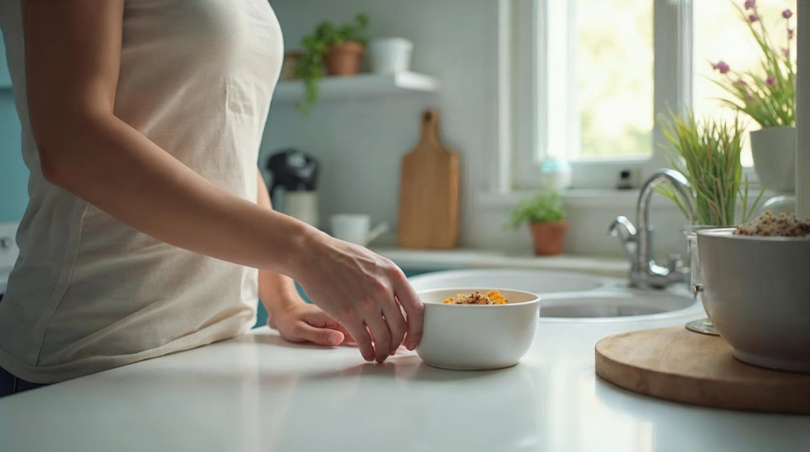
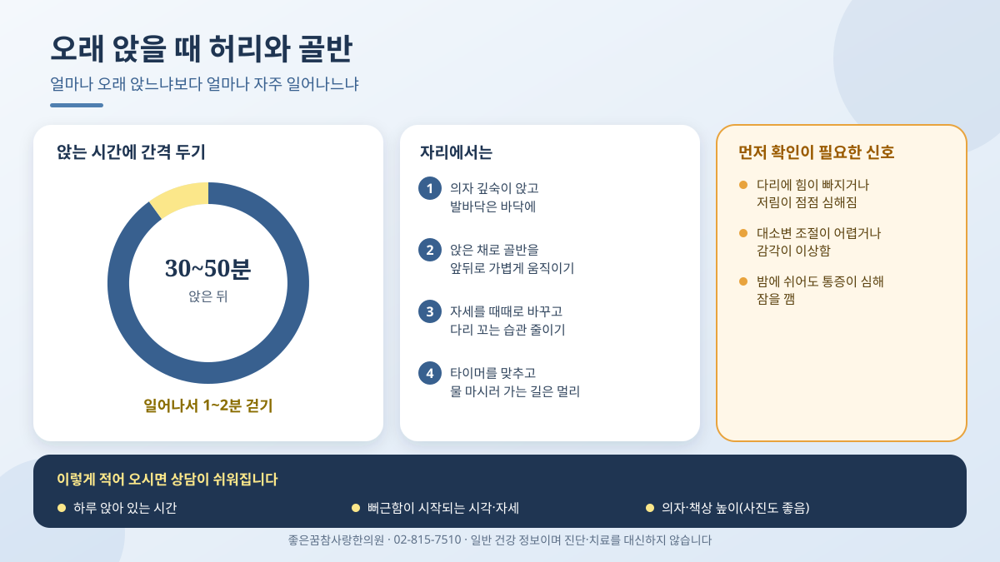

이종호 한의사 감수좋은꿈참사랑한의원 대표원장 (한의사 면허번호 19769)발행 2026-11-22 · 수정 2026-11-26
이 글의 차례
결론부터 말하면 30~50분에 한 번은 일어나 1~2분 걷는 것이 가장 쉽고 꾸준히 할 수 있는 방법입니다. 공부나 사무로 하루 대부분을 앉아 있으면 허리와 엉덩이, 골반 주변이 뻐근해지기 쉽습니다. 앉은 자세가 같은 채로 오래 이어지는 것이 부담의 큰 이유가 되기도 합니다.
노량진 학원가의 강의실이나 독서실에서는 한 번 자리에 앉으면 강의 두세 시간, 자습 서너 시간이 이어지는 날이 많습니다. 좁은 책상과 등받이가 낮은 의자, 고시원의 작은 책상처럼 자세를 바꾸기 어려운 환경이라면 허리와 골반의 부담은 더 쌓이기 쉽습니다. 시간을 정해 일어나는 것과 함께, 앉는 자리를 몸에 맞추는 것이 기본입니다.
왜 이런 불편이 생길 수 있나요
- 앉아 있으면 허리 아래쪽과 골반 주변 근육이 한 자세로 오래 버티게 되어 뻐근함이 쌓이기 쉽습니다.
- 엉덩이와 허벅지 뒤는 오래 눌리고 사타구니 앞쪽 근육은 접힌 채 짧아져 있어, 일어설 때 허리가 바로 펴지지 않는 느낌이 들 수 있습니다.
- 의자와 책상이 몸에 맞지 않으면 등을 구부리거나 한쪽으로 기대는 자세가 습관이 되기 쉽습니다.
- 다리 꼬기, 한쪽 엉덩이로 앉기 같은 작은 습관이 골반 좌우의 부담을 다르게 만들기도 합니다.
- 허리는 원래 앞으로 살짝 휘어진 곡선이 있는데, 엉덩이를 앞으로 빼고 기대어 앉으면 이 곡선이 펴져 허리 아래쪽 부담이 커질 수 있습니다.
- 겨울에는 몸이 움츠러들고 바깥 활동이 줄어, 같은 시간을 앉아 있어도 더 뻣뻣하게 느끼는 분이 있습니다.
먼저 이렇게 여쭙니다
- 한 번 앉으면 몇 분 정도 자리를 뜨지 않나요?
- 앉아 있다가 일어날 때 허리가 펴지지 않는 느낌이 있나요?
- 엉덩이나 다리 쪽으로 저리거나 당기는 느낌이 있나요?
- 의자와 책상 높이는 몸에 맞나요?
- 아침에 일어날 때와 저녁 공부를 마칠 때 가운데 언제 더 뻐근한가요?
일상에서 먼저 해 볼 수 있는 것
- 30~50분마다 일어나 1~2분 걷기
- 의자 깊숙이 앉고 발바닥이 바닥에 닿게 하기
- 앉은 채로 가볍게 골반을 앞뒤로 움직이기
- 앉는 자세를 때때로 바꾸고 다리를 꼬는 습관 줄이기
- 타이머로 일어날 시각을 정해 두고, 물 마시러 가는 길을 일부러 멀리 잡기
- 허리 뒤에 작은 쿠션이나 접은 수건을 대어 허리 곡선 받치기
- 책이나 모니터는 눈높이 가까이 올려 고개와 등이 앞으로 숙여지지 않게 하기
- 쉬는 시간에는 선 채로 허리를 천천히 펴고 엉덩이 뒤쪽을 가볍게 늘이기(아프거나 저리면 바로 멈추기)

상황별 예시
- 예를 들어 학원 강의가 90분씩 이어져 중간에 일어나기 어려운 경우라면, 강의 중에는 앉은 채 골반을 앞뒤로 움직이고 발목을 돌리며, 쉬는 시간에는 자리에 앉아 있지 말고 복도나 계단을 한 바퀴 걷도록 권합니다.
- 예를 들어 독서실에서 하루 10시간 넘게 자습하는 경우라면, 50분 공부하고 일어나 물을 뜨러 가는 식으로 타이머를 정해 두고, 점심과 저녁 식사 뒤에는 10~15분 밖을 걷는 시간을 넣어 봅니다.
- 예를 들어 오래 앉아 일하는 직장인이 퇴근 뒤 인강으로 시험을 준비하는 경우라면, 낮 근무와 밤 공부를 합친 앉는 시간이 생각보다 길 수 있어 하루 전체 앉은 시간을 먼저 적어 보는 것부터 함께 해 봅니다.
스스로 점검해 보세요
- 한 번 앉으면 한 시간 넘게 일어나지 않는 날이 많나요?
- 앉았다 일어날 때 몇 걸음 걸어야 허리가 펴지나요?
- 다리를 꼬거나 한쪽 엉덩이로 앉는 습관이 있나요?
- 발바닥이 바닥에 닿지 않거나 책상이 높아 어깨가 올라가나요?
- 하루에 일부러 걷는 시간이 20분도 안 되나요?
한의원에서 함께 살필 수 있는 경우
- 오래 앉아 공부하거나 일하면 허리가 뻐근한 경우 움직임의 간격을 함께 살핍니다.
- 일어서면 허리가 뻣뻣한 경우 자세와 근육의 긴장을 함께 살핍니다.
- 쉬는 시간에도 몸이 풀리지 않는 경우 생활 속 움직임을 함께 살핍니다.
- 엉덩이나 허벅지 뒤가 당겨 오래 앉아 있기 힘든 경우 골반 주변 근육과 저림 같은 신경 증상을 함께 살핍니다.
좋은꿈참사랑한의원에서는 첫 방문 때 언제부터, 어떤 자세에서, 어디가 아픈지를 먼저 충분히 듣습니다. 진맥을 기본으로 움직임과 누르는 반응, 저림·감각·근력 같은 신경 증상을 확인하고, 필요하다고 판단될 때 초음파를 더해 살핍니다.
그다음 침·약침·추나 가운데 상태에 맞는 방법을 정하고, 오늘 받을 치료와 이유를 먼저 설명해 드립니다. 귀가 전에는 공부 자리에서 해 볼 의자·쿠션 위치와 쉬는 간격, 다음에 확인할 일을 알려 드립니다.
노량진역(1·9호선) 3번 출구에서 마을버스 동작01을 타고 신동아리버파크에서 내리시면 되고, 학원 수업이 끝난 평일 저녁(20:00까지)이나 토·일·공휴일(09:30~15:00)로 예약하실 수 있습니다.
이렇게 기록해 오시면 상담이 쉬워집니다
- 하루에 앉아 있는 시간과 한 번에 일어나지 않는 시간
- 뻐근함이 시작되는 시각과 가장 심한 자세
- 다리 저림이나 당김이 있다면 어느 쪽, 어디까지인지
- 쓰는 의자와 책상의 높이(사진이 있으면 좋습니다)
- 다른 병원에서 받은 검사 결과(엑스레이, MRI 등)가 있다면 그 자료
얼마나 지켜보고 언제 상담할까요
- 쉬는 간격과 앉는 자세를 바꾼 뒤 1~2주 동안 뻐근함이 어떻게 달라지는지 지켜봅니다.
- 2주 넘게 바꿔 보아도 뻐근함이 그대로이거나, 아침에 허리가 펴지지 않는 날이 늘면 상담을 권합니다.
- 엉덩이 아래로 저림이 내려가거나 다리에 힘이 빠지는 느낌이 있으면 기다리지 말고 바로 진료를 받아 보세요.
이런 증상은 먼저 확인이 필요합니다
- 다리에 힘이 빠지거나 저림이 점점 심해지는 경우
- 대소변 조절이 어렵거나 사타구니·항문 주변 감각이 둔해진 경우
- 밤에 쉬어도 통증이 심해 잠을 깨는 경우
복용 중인 약은 먼저 알려 주시고, 처방한 의사와 상의 없이 줄이거나 끊지 않습니다. 위 신호가 있거나 갑자기 심해지면 한의원 진료를 기다리지 말고 가까운 응급실을 이용하세요.
함께 읽으면 좋은 글
- 노량진에서 하루 종일 앉아 공부하는 수험생의 허리와 목은 어떻게 살피나요?
- 앉을 때도 누울 때도 허리 곡선을 지키라는 건 무슨 뜻인가요?
- 앉아 있다 일어날 때 엉덩이와 사타구니가 아픈 것은 왜 그런가요?

여쭙는 것
- 한 번 앉으면 몇 분 정도 자리를 뜨지 않나요?
- 앉아 있다가 일어날 때 허리가 펴지지 않는 느낌이 있나요?
- 엉덩이나 다리 쪽으로 저리거나 당기는 느낌이 있나요?
생활에서 해 볼 것
- 30~50분마다 일어나 1~2분 걷기
- 의자 깊숙이 앉고 발바닥이 바닥에 닿게 하기
- 앉은 채로 가볍게 골반을 앞뒤로 움직이기
한의원에서 함께 살필 것
- 오래 앉아 공부하거나 일하면 허리가 뻐근한 경우 움직임의 간격을 함께 살핍니다.
- 일어서면 허리가 뻣뻣한 경우 자세와 근육의 긴장을 함께 살핍니다.
- 쉬는 시간에도 몸이 풀리지 않는 경우 생활 속 움직임을 함께 살핍니다.
먼저 확인이 필요한 신호
- 다리에 힘이 빠지거나 저림이 점점 심해지는 경우
- 대소변 조절이 어렵거나 사타구니·항문 주변 감각이 둔해진 경우
- 밤에 쉬어도 통증이 심해 잠을 깨는 경우
한눈에 보는 표
| 구분 | 핵심 |
|---|---|
| 여쭙는 것 | 한 번 앉으면 몇 분 정도 자리를 뜨지 않나요? 앉아 있다가 일어날 때 허리가 펴지지 않는 느낌이 있나요? |
| 생활에서 해 볼 것 | 30~50분마다 일어나 1~2분 걷기 의자 깊숙이 앉고 발바닥이 바닥에 닿게 하기 |
| 한의원에서 함께 살필 것 | 오래 앉아 공부하거나 일하면 허리가 뻐근한 경우 움직임의 간격을 함께 살핍니다. 일어서면 허리가 뻣뻣한 경우 자세와 근육의 긴장을 함께 살핍니다. |
| 먼저 확인이 필요한 신호 | 다리에 힘이 빠지거나 저림이 점점 심해지는 경우 대소변 조절이 어렵거나 사타구니·항문 주변 감각이 둔해진 경우 |
자주 묻는 질문
서서 공부하면 허리에 더 좋은가요?
스탠딩 책상처럼 서서 공부하는 시간도 길어지면 허리와 다리에 부담이 될 수 있어, 앉기와 서기, 걷기를 번갈아 하는 방법을 권하는 경우가 많습니다.
허리 보호대를 계속 차도 되나요?
오래 차면 근육 사용이 줄 수 있어 필요한 때만 쓰도록 안내하는 경우가 많습니다.
한의원에서는 무엇을 보나요?
앉는 시간과 자세, 통증이 오는 시점을 묻고 체형과 움직임을 함께 살핍니다.
허리 쿠션은 아무것이나 써도 되나요?
허리 뒤를 가볍게 받쳐 엉덩이를 의자 깊숙이 넣고 앉을 수 있으면 되는 경우가 많습니다. 너무 두꺼워 몸이 앞으로 밀리면 오히려 불편할 수 있어, 진료 때 앉는 자세를 보며 위치를 함께 맞춰 봅니다.
좋은꿈참사랑한의원은 재진 때 지난번 이야기부터 이어서 여쭙니다. 진료시간과 예약은 오시는 길에서 확인하세요.
어디서 상담받을 수 있나요?
좋은꿈참사랑한의원은 서울 동작구 만양로2길 2 신성빌딩 3층·5층(서울 동작구 상도동, 7호선 상도역 3번 출구 근처)에 있습니다. 한의사 3명(이종호 대표원장, 조영기 수석진료원장, 정원영 진료원장)이 진료합니다. 진료시간은 평일 09:30~20:00(점심 13:00~14:00), 토·일·공휴일 09:30~15:00이며, 방문 전 전화로 확인을 권합니다. 예약은 네이버 예약, 카카오톡 상담, 전화 02-815-7510로 받습니다.
이 글은 일반적인 건강 정보이며 개인의 진단이나 치료를 대신하지 않습니다. 증상이 있거나 복용 중인 약이 있다면 진료를 통해 확인하세요. 치료 효과는 개인마다 다를 수 있습니다.
작성 기준: 일반적으로 알려져 있는 건강 정보를 참고해 정리했습니다(대표원장 감수). 증상 기록은 1~2주 동안 하루 1회, 비슷한 시간에 적어 오시면 지난 상태와 비교하기 쉽습니다.